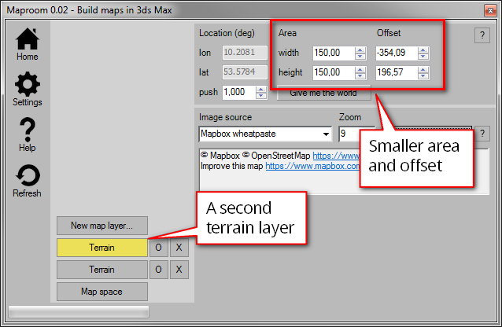

Map Helpers¶
Map helpers are the objects you see in the viewport when creating a map, which are not actually part of the map. These map helpers contain the information used by Maproom to create and maintain the map. It’s possible to delete the map helpers manually but it’s not a good idea. This will remove all of the “intelligence” from the map and leaves you with a bunch of planes and shapes.
There are two types of map helpers: for each map there’s one parent helper and for each map layer there are smaller helpers. The parent serves as an anchor of the map. It represents the map space you’ve specified. If your map space is lon,lat 5,52 then wherever you move this helper, that represents 5,52. If you move this helper in your scene, the map itself doesn’t change.
Moving the parent map helper doesn’t change the location of the map
The layer helpers are children of the main map helper. If you move the parent, all map layers move with it and keep their relative distances. The map itself doesn’t change. When you move an individual map layer helper you change the offset of this map layer. This is a good way to pick a location for a map layer. For instance you could have a base layer with a low resolution world map. A second, smaller layer with the size of a country can be used to move around and search for a good area.
Moving a maplayer changes it’s offset in relation to the parent
You can also move individual maplayers by changing their Offset in the location panel of a map layer. Their position in the viewport is changed accordingly and their lon,lat locations are also show in the location panel.

Typing in an offset also moves the maplayer
A map with a single maplayer centered on Berlin
A second maplayer has been added and offset
The second maplayer shows detail on an area of interest
When the Maproom script is open you can jump to a map layer directly by selecting it in the viewport. This is very convenient if you have multiple map layers in a single map.
Navigate the map conveniently by selecting the maphelper in the viewport or the layerbutton in the script